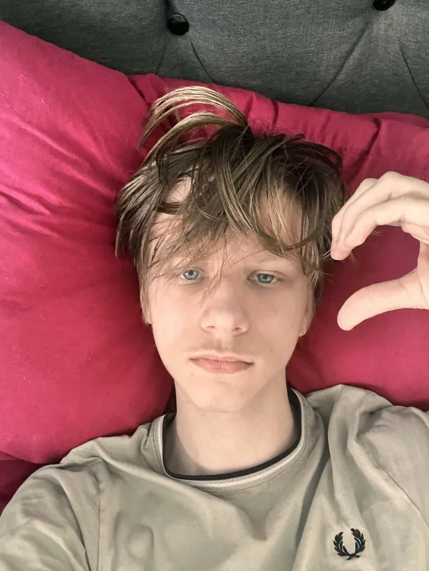

First of happy national gf day
kimi I know your not mine however I still made this and I hope you enjoy this and first off wanted to first say your so kind literally your the kindest and sweetest person in the whole world you make my heart melt so much it makes me smile so god damn much you don’t know how much I smile if I check any app where I have you and I see a message from you like oh my god the joy that gives your literally the best person in the whole entire world you make me love my life just because your in it and it’s insane even if we don’t talk much I still get so much excitement from talking to you it’s actually crazy and then your voice that lights up my world I would listen to it every day I’d fall asleep to it every single day of the year and every single second because oh my it’s so nice I don’t care what you say I just wanna wake up to it like it’s words so heavenly it is from the heavens itself your literally blessing my ears with your heavenly voice it literally also makes me go insane because how can someones voice be so gorgeous 😔😔 like holy I think it’s my favourite thing to hear and sometimes i just go back and listen to your voice because it’s so nice I dream of one day you having a song and I’d listen to it always no matter what because how the hell is it so god darn amazing it’s a piece of art work people would genuinely think that cures all their disseases even my sickness It’s getting better from merely hearing your voice and I’m not even anywhere close to you it’s majestic truely it makes me cry from happiness like I did cry when I told you I heard your voice cause oh my god it was like a blessing and then your little accent it’s so cutee like awwwhh it makes me smile so much it’s so cute and then your laughs oh my god it’s sooooooo amazing like it brings light to me and even just listening to a second of your voice is literally like the best best thing ever genuinely and your going to call this glazing or whatever but it’s not it’s just the truth
Thinking back to the first time I met you I could feel something so special from you that was special I will say when we first met on equals I could tell there was something different about you and I really wasn’t wrong because you are actually sooooo fantastic and then we talked on a dif app and then ever since the start of us talking I haven’t felt sad even for a moment
now lets talk about your pretty ass hair
kimi cause what the hell it’s like the perfect length it looks so pretty I love when it’s straight and curly it’s literally the best hair i’ve ever seen in the whole entire world it looks majestic and soooooooo perfect I wanna like play with it if u allowed me to because how can it look so nice just like you like oh my I love your hair I can’t and then the photos of you smiling I love looking at them because you look so cute it makes me literally smile so much your adorable I just wanna cuddle u and cherish you for eternities on end cause oh myy its so cute how your so excited to see me like no matter when and then and then I just want to give you a kiss because like it’s cutee and it’s like your favourite thing and it’s just cute like you and then when we first messaged I remember how happy I got because you were so kind and then when we talked after in dms when you were talking to me so cutee and adorable it just made me so happy and feel so lucky even talking to you because how am I so lucky to be talking to someone so close to perfection as perfection is impossible and then the little spectacles in your eyes they are the most gorgeous spectacles I’ve ever seen they are soooooooo pretty I love staring at them any time I miss you it’s literally so cutee it makes me so joyful
kimi
I can forget about my favourite out of everything you have your personality that’s the most beautiful thing you have because how can you be so sweet like it makes my heart melt so god damn much because your so sweet even though and I know if I ever came to south africa you’d offer to tour guide me which I’ll happily take up that’s literally like a dream I get to be next to you and hear your voice be next to you literally perfect that’s literally heaven itself but then there's your voice messages you always send which are beautiful and so gosh darn sweet and your just an angel and when your at school and then when you came back you’d always come back with the sweetest possible things and even sometimes you’d message me when you were at school it was so perfect so much more than I could ever dream of honestly sometimes while messaging you I have cried but not in sadness but rather a deep longing love to even talk to you and have that chance that just explains how much of a wonderful person you and you could literally always make my sadness go into joy and that just explains the type of person you are your literally perfect darling
I literally dream of going to south africa and you’d tour me around the whole country or we’d go somewhere else together and it would be so cute and sooooo perfect or I wish we could go somewhere together and explore it for the first time or maybe one day you come here and you could meet my whole family and I know you’d be so respectful and kind because I know your the sweetest and most caring person in the whole entire universe darling you actually the most immaculate person ever.
I also adore your texting style it’s the sweetest I can literally tell when your happy or your upset about anything because sometimes theres voice messages and I can understand them so well and I feel like that’s one reason were so close but I really do wish we could call like alot more because I love just hearing your voice and just having you be excited and I want to play roblox with you even if it’s in the most unserious game ever just being with you is enough for me and I hope that the bond that we have never ends because I’d truly be hurt and destroyed and then I know how sweet you are with you friends even if you have conspiracies with them and lie about some red guy with a spider or something it’s so cute how you just have a group chat and even a little nickname for all of you guys it’s soooo cute and it shows how perfect you are
Everyone should be so thankful to have
kimi in their lifetime because she is truly the most spectacular person someone could ever dream of meeting cause she is just the best and best and forever perfect
I’d literally climb mount everest just to hear your voice for a second or literally any part of you even texting you for a second that’s worth climbing mount everest for or doing the most extreme feats someone could do in a life time just for a single short moment with you but every short moment with you is so ephemeral but the best possible thing you could ever dream of and even way past that
I bet your even better irl because how do I get so lucky for online I’d be even more happy irl just being near you because you probably give out an aroma of happiness and joy to literally anyone your a literal cure your the person people pray for your the person who changes everyone's life from a mere glimpse gosh the people irl who speak to you daily that must be the same as living on heaven because you truly are wonderful dear I mean it
Also I really hope you have the best day ever my pretty girl and your so amazing in my eyes your the best person in the whole world I also decided to write u a poem below because you really deserve way more than I could possibly give so I thought why not try make it better please ignore if it’s bad I didn’t have much time to work on it or even this whole thing but your the absolute best person in the whole world so I spent a lot of hours working on this and everything just so you can feel special but I hope this is enough and I bet everyone across the globe would reject people irl just for a chance to be closer to perfection itself (you) and even spend millions for a chance.
And whenever I think of you it’s just in happiness and joy some calm spell plays of your voice I imagine songs in your voice and that’s the best form of peace I could ever dream of I think of the songs that remind me of you and imagine it’s you singing them and your next to me and were enjoying life to the fullest I think of “Terrance Loves you” and so many other songs and Imagine them in your voice
Why that song in particular it’s because it just reminds me of you as a person it gives me the peace and clarity I get when I think of you it’s the same mood and joy I feel and I love the feeling more than I could probably even describe
And I can’t forget to mention the little poem you wrote for me it was the most sweet thing I could ever imagine because you are a blessing in this world it’s the cutest thing ever and I think it’s for me if it’s not then that’s mean however thank you for it your an angel a true seraph in this world thank you for existing I think I’d die without even the thought of you
And don’t you dare make fun of your beautiful voice again it’s the most majestic voice i’ve ever heard and I love that you adore my voice too it’s also so cutee I love it and your so sweet I must say genuinely the most sweet person I could imagine in this world especially when you talk about me and how much you adore me and even talk to your friends about me and I love all the reels you send me it’s the most beautiful and cute thing ever like I will watch every single one and love each
(oh and by the way I have no clue who the one was messaging you on ur thingy on the 31st because that wasn’t me and uhh you should get that checked out and u better not cheat on me or i’ll cry)
Anyways I hope you have the absolute best day in the whole entire world and now I guess it’s time for a 2nd surprise I have to give you and I think you might like this one too oh btw this whole thing is 2009 words I tried to make it special and dedicated to you because you deserve way more than this however I thought it would be special enough to give it to you anyways because my pretty girl your wonderful truly perfection I adore you
kimi
With love,🤍

Your eyes - acorns: serene, brown, and earthy, holding quaint strength.
Luminous - sunlight through branches.
I would wake to them every day;
Heaven itself has nothing on that haven.
They’re a fleeting beauty - uncopyable - an ember-soft glow.
Your irises don’t rush to be noticed;
They invite you to stay.
In them,
Being noticed feels like shelter.
They anchor my gaze;
keeping their gentleness
even through plagues of anxiety.
Never restless,
But Sylvan. Still.
They capture a mood, not a personality.
How could I let this distance grow, after so much tenderness shared?
Let it fester; let it rot?
Your kindness isn’t loud or performative;
it’s in the small, deliberate acts -
The way you listen,
The shade you provide,
The quiet way you hold,
Without ever expecting to be noticed.
The love I amassed is unfathomable;
time still bends towards you.
You are the future
I once dared to prophesy
Without you,
I am lost to a bitter hollow.
Brown:
The colour I’ve painted my life.
My purpose, my thoughts, the timber of my soul.
Tell me,
Why is it treason to call you mine?
Still, I drown in those depths,
felled by your love,
a root I wear proudly - divine punishment from above.
Molded from the shivelight beneath the canopy,
If you are Heaven’s creation,
then loving divinity
is my only sin.
I never expected a goddess
who exists without demand.
But you exist.
So give me a break from the cicadas -
Find me a clearing in your depths,
a warm blanket of stillness.
What a cruel, cruel
addiction.
But forever the muse.
And now I want to ask may I be yours